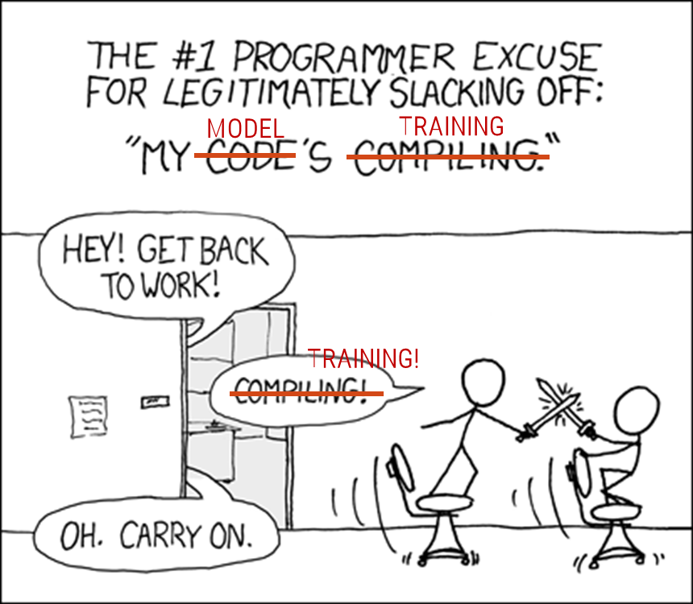

Machine Learning and Data Mining (Module 2)
Modeling: Neural Networks

Recalling the Machine Learning pipeline
We now focus on the model, the “heart” of the AI in our system.

Data pipeline
- With model, we refer to the “mechanism” with which input data are transformed into outputs
- A ML algorithm trains a ML model
- Usually, this “mechanism” is based on math, geometry, statistics, etc.
- Even with the best model available, the model will perform poorly if it trains on “dirty” data
Disclaimer!
Neural networks are mathematically intensive!

Mathematical Symbol Fight
Neural Networks
Neural Networks (NN): the key idea is to imitate, as far as possible, the neurons of the human brain
- Networks since neurons are connected to each other
- Several scientific studies reported the structure of the biological neuron:

Biological neuron
- The axon carries nerve signals away from the soma (from left to right)
- The cell body is where signals are aggregated and processed
- The dendrites collect the inputs from other neurons
Artificial Neuron (perceptron)
The first scheme about the neuron was introduced by (McCulloch and Pitts 1943)
The first Artificial Neuron (AN) was introduced by Rosenblatt in 1957
- Inputs are digital numbers (not analog signals)
- Inputs are weighted (signals are not all equally important)
- Inputs are merged with a sum function (plus a bias)
- An activation function is used to generate the final output:
- Also the human brain filters inputs, it is impossible to always take everything into account

Examples of working ANs: Boolean functions

Boolean functions
Linear vs Non-linear problems
A single AN can solve only linear problems!

Linear vs Non-linear
The solution is to use more ANs organized on different layers → Multi-Layer Perceptron (MLP)
- It is not so easy, since this introduces several mathematical problems
- Besides, we greatly improved the computational load
ANN typologies
Feed forward:
- The connections connect the neurons of one level with the neurons of the next level
- Backward connections or connections to the same level are not allowed
Recurrent:
- Feedback connections are expected
- Generally towards neurons of the same level, but also backward
- Suitable for sequences because they have a (short-term) memory effect
In our course, we will use only FF NN!


Activation functions
Activation functions define the output of the neuron given an input or set of inputs:
- They output a small value for small inputs, and a larger value if their inputs exceed a threshold
- They are a sort of switch of the artificial neuron

Universal Approximation Theorem
Universal Approximation Theorem: a NN with at least 1 hidden layer can approximate any continuous function to any desired degree of accuracy, given sufficient neurons in that hidden layer, the right weights and biases, and a non-polynomial activation function.

Universal Approximation Theorem
Limitations
- The theorem applies to feedforward neural networks with \(n\) inputs, a single hidden layer (“shallow” and wide), and 1 output
- Achieving a close approximation might require an impractically large number of neurons, making the network hard to train
- The theorem assumes that the “right” weights and biases exist, but does not address how to find them
- Not applicable to discontinuous functions
Universal Approximation Theorem (Kidger and Lyons 2020)
(Kidger and Lyons 2020): let \(n\) be the number of input neurons, \(m\) be the number of output neurons, and let \(\rho\) be any nonaffine continuous function, with a continuous, nonzero derivative at some point. The class of neural networks of arbitrary depth, width \(n + m + 2\) and activation function \(\rho\), is dense in \(C(K; R^m)\) for \(K \subseteq R^n\) with \(K\) compact. This covers any activation function, including polynomial activation functions.

Universal Approximation Theorem for Deep Narrow Networks
This is why deep neural networks work.
Neural networks training: intuition

Training
Neural networks training
General considerations about Neural Network architectures
- Greater number of hidden layers (therefore neurons)
- → better performance
- → need for more training data
- → greater computational load
How is it possible to train a neural network?
- Training a neural network is complicated, but we can use specific frameworks
- The same happens in Machine Learning and the scikit-Learn library


Deep Neural Networks (DNN)
Deep Learning: a branch of ML that avoids the problematic phase of feature extraction (also) with high-dimensional inputs.


Feature extraction requires human intervention.
- … Often, this is the weak link in the chain!
ANN and DNN training: a visual guide

- This surface is the solution space of the loss function
- low values → low error
- Starting point
- Output of the NN with initial (random) weights
- Global minimum: the desired goal point!
- The learning procedure is performed in an iterative manner
- Following the gradient, the optimizers look for the (global) minimum
- Each step is proportional to the learning rate adopted
- Local minimum
- The loss function of DL models usually has many local minima.
- The solution obtained by the final iteration may only locally minimize the loss function.
Softmax
The softmax layer transforms an n-dimensional vector of real numbers into a vector of real numbers \(\in [0, 1]\) which adds up to 1
- The Softmax activation function determines the final probability value of each class \(p_i = \frac{e^{a_k}}{\sum_{k=1}^n e^{a_k}}\)
- Softmax is a continuously differentiable function.

Softmax
See also:
Cross Entropy + Softmax


\(CCE = -log_2 0.755 = 0.3677\)
After some training iterations…

\(CCE = -log_2 0.0938 = 0.0923\)
The loss function has decreased!
ANN and DNN training
How to minimize the loss?
- Adjusting (changing) the weights and the bias of every neuron
Choosing the learning rate
Gradient descent
Gradient descent is a method for unconstrained mathematical optimization.
- It is a first-order iterative algorithm for minimizing a differentiable multivariate function \(F(\mathbf {x} )\).
- Take repeated steps in the opposite direction of the gradient of \(F(\mathbf {x})\) at the current point: the direction of steepest descent.
- Conversely, stepping in the direction of the gradient will lead to a trajectory that maximizes that function (gradient ascent)
If \(F(\mathbf {x})\) is defined and differentiable in a neighborhood of a point \(\mathbf {a}\), then
\(F(\mathbf {x} )\) decreases fastest in the direction of the negative gradient of \(F\) at \(\mathbf {a}\), that is \(-\nabla F(\mathbf {a} )\).
It follows that, if \(\mathbf {a} _{n+1}=\mathbf {a} _{n}-\eta \nabla F(\mathbf {a} _{n})\)
For a small enough step size or learning rate \(\eta \in \mathbb {R} _{+}\), then \(F(\mathbf {a_{n}} ) \geq F(\mathbf {a_{n+1}})\)

Gradient descent
Vanilla Gradient Descent
- Start with random initial values for parameters (weights and biases)
- Use the current parameters to compute predictions on the training data
- Compute the cost function
- Calculate the gradient of the cost function with respect to each parameter \(\nabla J(\Theta)\)
- Adjust each parameter in the opposite direction of the gradient. \(\Theta = \Theta−\eta \cdot \nabla J(\Theta)\)
- Repeat steps 2–5 for each epoch (i.e., iteration over the entire dataset) until the cost function converges to a minimum or reaches a predefined number of epochs

Vanilla Gradient Descent
- Smooth convergence
- Not recommended for huge training dataset → Slow and computationally expensive algorithm
Gradient descent
(Mini-batch) Stochastic Gradient Descent (SGD)
- Start with random values for parameters (e.g., weights and biases)
- Split the dataset into multiple small batches of a predefined size
- For each mini-batch \(\mathbf{B}\):
- Make predictions using the current parameters for each sample in \(\mathbf{B}\)
- Calculate the cost or error for the mini-batch
- Compute the gradient of the cost function with respect to each parameter
- Adjust each parameter. \(\Theta = \Theta−\eta \cdot \nabla J(\Theta; \mathbf{B})\)
- Go through all mini-batches until every sample in the dataset has been used once (one epoch), then shuffle the dataset and repeat the above process for the next epoch.

Advantages
- Faster Training: more frequent parameter updates than batch gradient descent, leading to faster convergence.
- Efficient GPU/CPU Utilization: Mini-batch enables parallel processing and faster computation on GPUs.
Drawbacks
- Selecting an optimal batch size requires some experimentation, as it can affect both the speed and stability of convergence.
- Mini-batch gradient descent is less stable than full-batch gradient descent, especially for small batch sizes.
Backpropagation
Backpropagation (i.e., backward propagation of errors) propagates the error to the input of a ANN
- We cannot directly compute the derivative of the loss function with respect to the outputs of the network
- Backpropagation is a local process: neurons are completely unaware of the complete topology of the network
- Apply the chain rule to propagate the derivative of the loss function up to the inputs of the network

Chain rule
- The introduction of backpropagation has been fundamental in training DNNs!
- The delta rule is a special case of the more general backpropagation algorithm
Backpropagation
The problem with DNNs is that we have hidden layers, and the loss functions depend on “hidden parameters” \(𝑤\)

Chain rule
\(C(y,f^{L}(W^{L}f^{L-1}(W^{L-1}\cdots f^{2}(W^{2}f^{1}(W^{1}x))\cdots )))\)
- \(x\) is the input;
- \(z^{l}\) is the weighted input of each hidden layer
- \(a^{l}\) is the output of hidden layer \(l\)
Finally, the derivative is \(\frac {dC}{da^{L}} \cdot {\frac {da^{L}}{dz^{L}}}\cdot {\frac {dz^{L}}{da^{L-1}}}\cdot {\frac {da^{L-1}}{dz^{L-1}}}\cdot {\frac {dz^{L-1}}{da^{L-2}}}\cdot \ldots \cdot {\frac {da^{1}}{dz^{1}}}\cdot {\frac {\partial z^{1}}{\partial x}}\)
ANN and DNN training: summarizing
- Loss function → desired goal of the NN
- How?
- Minimize loss function → moving close to the goal
- What does it mean in practice?
- Adjusting weights (and bias) of the NN
- Through
- Gradient Descent → Optimizers
- Parameters:
- Learning rate
- Batch size
- …
- Based on
- Parameters:
- Backpropagation + Chain Rule
- Therefore
- The loss function must be differentiable!

Learning Curves
It is common to create line plots that show epochs along the x-axis and the loss value of the model on the y-axis.
- 2 plots (usually overlapped):
- One for the training
- One for the validation
- These plots are called learning curves.
- Loss values (this is an error, then low values are ok for us!)
- These plots can help to diagnose whether the model has over-learned (overfitting), under-learned (underfitting), or suitably fits the training dataset.

- Usually, at the beginning of the learning, the value of the loss function drops rapidly
- Starting of the overfitting
Machine Learning vs Deep Learning
| Element | Machine Learning | Deep Learning |
|---|---|---|
| Data | Large data (~ hundreds) |
Huge data (~ thousands) |
| Accuracy | High accuracy | Best accuracy (high-dimensional data) |
| Training time | ~minutes | ~hours, days |
| Hardware | CPU | GPU |
| Features | Manual | Learned |
| Interpretability | Good | Low |

Hardware for Deep Learning
The training of NN, especially if they are deep, requires specialized hardware:
- Before starting a project with DL, you need to ask if the company/lab has the necessary hardware
Having one or more GPUs available is today a fundamental factor:
- GPUs are essential for parallelizing (and therefore speeding up) calculations.
- As seen, the deeper a network is, the more computational load is introduced
To date, Nvidia, a company that dominates the market:
- The parallelization of the calculations is possible thanks to the CUDA libraries (Compute Unified Device Architecture, the true core business of Nvidia)
- Google has started a competition by introducing TPU (Tensor Processor Unit)


Hardware for DL: in-house vs external solutions
External solution: the hardware is rented through the PaaS paradigm (Cloud)
- Pros:
- Hardware maintenance is NOT required
- NO investment over time is required for hardware upgrades
- Dedicated server rooms are NOT required; energy consumption is not borne by the company
- Cons:
- In the long run, it tends to have higher costs
- Cons already seen for cloud-based solutions:
- Vendor lock-in → it is difficult to escape from the service provider
- Who really owns the data?
- Privacy issues

Examples:
(Cottier et al. 2024)

The rising costs of training frontier AI models

